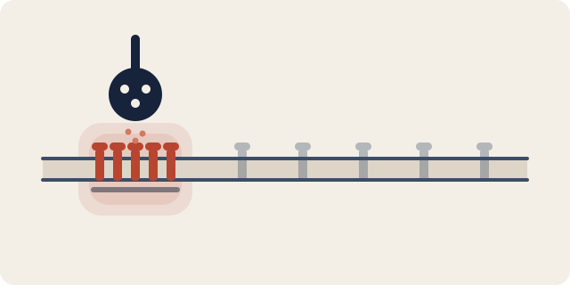
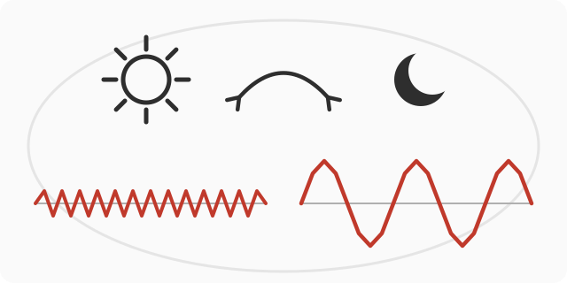

研究Research
围绕GABA能抑制性突触的四个相互关联的研究主题：聚 · 散 · 转 · 调 Four interconnected themes on GABAergic inhibitory synapses: assemble · disperse · transform · modulate
聚 · 突触组装 聚 Assemble · Synapse Assembly
抑制性突触如何形成？我们研究突触后支架蛋白（Neuroligin 2、Slitrk3）如何引导GABA-A受体在突触后膜聚集、组装成功能性突触，以及这些过程的异常如何导致神经系统疾病。
How do inhibitory synapses form? We study how postsynaptic scaffold proteins (neuroligin 2, Slitrk3) guide GABA-A receptors to cluster at the postsynaptic membrane and assemble into functional synapses — and how disruptions of these processes cause neurological disease.

相关论文：Related papers:
- Li J et al. (2017). Molecular dissection of neuroligin 2 and Slitrk3 reveals an essential framework for GABAergic synapse development. Neuron 96(4), 808-826.
- Gu X, Zhou L, Lu W. (2016). An NMDA receptor-dependent mechanism underlies inhibitory synapse development. Cell Reports 14(3), 471-478.
- Duan J et al. (2019). Genetic deletion of GABA(A) receptors reveals distinct requirements of neurotransmitter receptors for GABAergic and glutamatergic synapse development. Frontiers in Cellular Neuroscience 13, 217.
- Duan JJ et al. (2025). Cell-autonomous GABAARs are essential for NMDAR-mediated synaptic transmission, LTP, and spatial memory. EMBO Reports 26(18), 4456-4476.
散 · 突触外信号与张力性抑制 散 Disperse · Extrasynaptic Signaling & Tonic Inhibition
并非所有受体都聚集在突触内。弥散于突触外膜的GABA-A受体介导持续而低强度的"张力性抑制"——大脑的背景刹车；受体在突触内外的扩散与转运则动态调节着这一过程。我们研究辅助亚基Shisa7如何调控张力性抑制，以及受体转运的分子机制。
Not all receptors cluster at synapses. Receptors dispersed across the extrasynaptic membrane mediate persistent, low-level "tonic" inhibition — the brain's background brake — while diffusion and trafficking of receptors in and out of synapses dynamically tune it. We study how the auxiliary subunit Shisa7 regulates tonic inhibition, and the molecular mechanisms of receptor trafficking.

相关论文：Related papers:
- Wu K et al. (2021). Activity- and sleep-dependent regulation of tonic inhibition by Shisa7. Cell Reports 34(12), 108899.
- Wu K, Castellano D, Tian Q, Lu W. (2021). Distinct regulation of tonic GABAergic inhibition by NMDA receptor subtypes. Cell Reports 37(6), 109960.
- Castellano D et al. (2022). Shisa7-dependent regulation of GABA(A) receptor single-channel gating kinetics. Journal of Neuroscience 42(47), 8758-8766.
- Lu W et al. (2010). Synaptic targeting of AMPA receptors is regulated by a CaMKII site in the first intracellular loop of GluA1. PNAS 107(51), 22266-22271.
转 · 状态转换 转 Transform · State Transitions
抑制性突触随睡眠与觉醒周期动态重塑，而麻醉则是意识状态的人为转换。我们研究睡眠与觉醒如何调控抑制性突触可塑性，以及麻醉与意识的分子与神经环路机制。
Inhibitory synapses are dynamically remodeled across sleep and wake cycles, and anesthesia is an induced transition of consciousness. We study how sleep and wakefulness regulate inhibitory synaptic plasticity, and the molecular and circuit mechanisms of anesthesia and consciousness.

相关论文：Related papers:
- Wu K, Han W, Lu W. (2022). Sleep and wake cycles dynamically modulate hippocampal inhibitory synaptic plasticity. PLOS Biology 20(11), e3001812.
- Wu K, Lu W. (2023). GABAergic synaptic transmission and plasticity oscillate across sleep and wake. Neural Regeneration Research 18(12), 2647-2648.
- Wu K et al. (2022). Shisa7 phosphorylation regulates GABAergic transmission and neurodevelopmental behaviors. Neuropsychopharmacology 47(12), 2160-2170.
调 · 变构调节与药物作用 调 Modulate · Allosteric Modulation & Drug Action
苯二氮䓬类药物、酒精与麻醉剂都通过变构调节GABA-A受体发挥作用。我们发现的辅助亚基Shisa7与TMEM132B正是这些药物作用的关键调控者。以此为靶点，我们的长期目标是开发治疗焦虑、失眠、癫痫与酒精成瘾的下一代药物。
Benzodiazepines, alcohol, and anesthetics all act by allosterically modulating GABA-A receptors. The auxiliary subunits we discovered — Shisa7 and TMEM132B — are key regulators of these drug actions. Our long-term goal is to turn these targets into next-generation therapeutics for anxiety, insomnia, epilepsy, and alcohol addiction.

相关论文：Related papers:
- Han W et al. (2019). Shisa7 is a GABA(A) receptor auxiliary subunit controlling benzodiazepine actions. Science 366(6462), 246-250.
- Wang G et al. (2024). The TMEM132B-GABA(A) receptor complex controls alcohol actions in the brain. Cell 187(23), 6649-6668.
- Pandey S et al. (2024). Reversing anxiety by targeting a stress-responsive signaling pathway. PNAS 121(31), e2400078121.
- Han W, Shepard RD, Lu W. (2021). Regulation of GABA(A)Rs by transmembrane accessory proteins. Trends in Neurosciences 44(2), 152-165.
研究技术与方法Techniques & Approaches
- 分子生物学与生物化学Molecular biology and biochemistry
- 膜片钳电生理学Patch-clamp electrophysiology
- 分子遗传学Molecular genetics
- 脑电与肌电记录（EEG/EMG）EEG/EMG recordings
- 在体钙成像In vivo calcium imaging
- 神经环路示踪Neural tracing
- 光遗传学与化学遗传学Optogenetics and chemogenetics